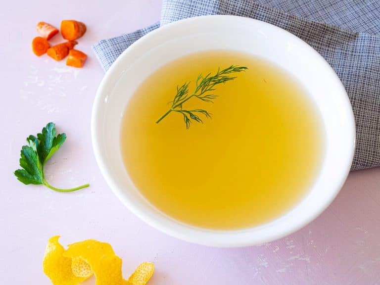

Court Bullion

Court Bullion is a flavorful broth commonly used for poaching seafood such as fish or shrimp. The gentle cooking method of poaching is used since seafood is commonly a delicate ingredient to work with. The broth has a sharp and fresh flavor due to the wine, lemon and fresh vegetables. Unlike other broths, court bullion has a relatively short cooking time making it a feasible weeknight option. Poaching in court bullion lends a sharp flavor while keeping your dish moist and tender. Court bullion translates from French to "briefly boiled broth". There are many variations on the recipe, but they all contain a base liquid, an acid, aromatics and vegetables.
Ingredients
- 5 cup cold water
- 1 cup white wine
- 2 stalk celery
- 1 leek, only the white part
- 1 small onion
- 1 lemon
- 1 bay leaf
- 1 teaspoon whole pepper
- 2 teaspoon kosher salt
- 1 sprig fresh parsley
Method
- Chop onions, celery, leek and lemon into quarters.
- Add water and wine to sauce pot, squeeze in lemon juice and drop your cut celery, onion, leek, and lemon into pot.
- Add bay leaf, peppercorn, salt and parsley to broth
- Bring to a simmer
- Once simmering, cover and turn off heat. Let sit for 30 minutes.
- When ready to poach desired protein or vegetable, add to a pan in which your food can be submerged in the bullion. Bring liquid to 160-180 degrees fahrenheit. Cook until desired doneness, making sure to